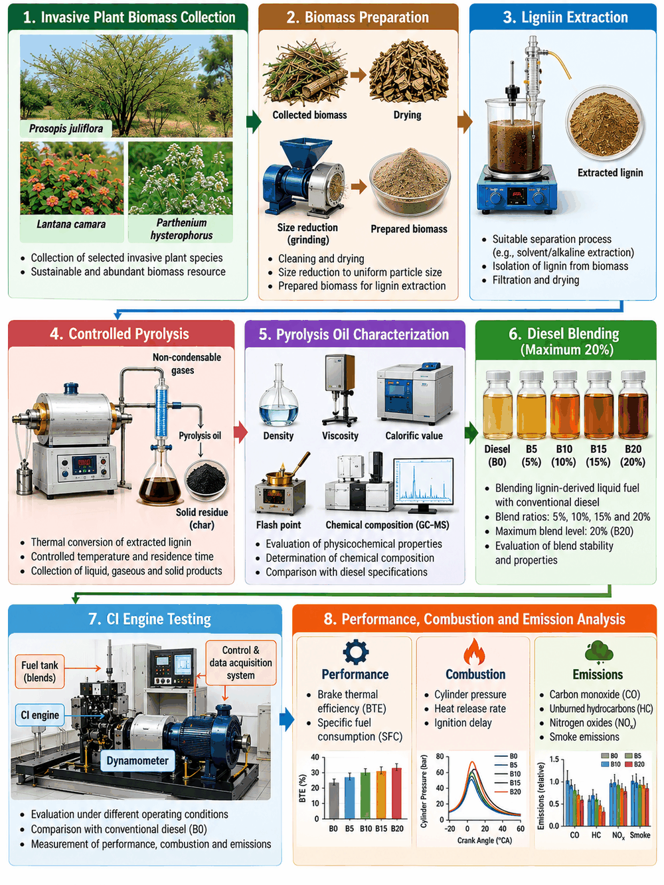

A
The challenge
Diesel engines depend on petroleum-based fuels. Alternative components require careful assessment of physicochemical properties, compatibility, combustion and emissions.
Extraction and Utilisation of Lignin as a Bio-Additive
A KARE student research project exploring lignin extraction and controlled conversion pathways to investigate the potential of biomass-derived materials as bio-additives for compression-ignition engines.

Lignin is a carbon-rich aromatic component of plant biomass. This project will investigate whether lignin-derived pyrolysis liquid can be assessed as a bio-additive in diesel blends, with suitability determined through fuel-property and engine testing.
Diesel engines depend on petroleum-based fuels. Alternative components require careful assessment of physicochemical properties, compatibility, combustion and emissions.
Connect lignin extraction and controlled pyrolysis with liquid-product characterization, selected diesel-blend preparation and comparative CI-engine evaluation.
Explore a value-added use for biomass-derived lignin while making no assumptions about engine benefits before experimental evidence is available.
The eight stages below summarize the proposed research framework.
Select, clean, dry and prepare feedstock.
ProposedSeparate and recover lignin.
ProposedConvert lignin to liquid products.
ProposedDensity, viscosity, CV, flash point, composition.
ProposedUp to 20% after suitability checks.
ProposedCompare blends with diesel.
ProposedBTE, SFC, pressure, HRR, ignition delay.
ProposedCO, HC, NOx, smoke.
ProposedOfficial abstract submitted to the Renewable Energy Research Poster Challenge 2026.
Srinath Vatchavari Venkateshan, Aarya Brat Shankar & R. Bhuvaneshwaran · KARE
To extract lignin from suitable biomass, produce bio-additives through controlled pyrolysis, and evaluate their physicochemical properties and suitability for blending with diesel at different dosage levels.
Feedstock selection, cleaning, drying and preparation.
Separation and recovery using the selected method.
Controlled pyrolysis to investigate liquid products.
Density, viscosity, calorific value, flash point, composition.
Biomass valorisation could support a more circular use of agricultural and plant residues. Evidence first.
Explore value-added use for biomass residues starting from lignin recovery.
Investigate lignin-derived liquids as partial diesel additives, subject to validation.
Connect biomass processing, materials and energy research.
Kalasalingam Academy of Research and Education (KARE), Krishnankoil, Tamil Nadu, India.
Background literature on lignin pyrolysis and bio-oil assessment.
For questions about the project, methodology or potential collaboration.
The team acknowledges Kalasalingam Academy of Research and Education (KARE) for institutional support and expresses gratitude to Dr. S. Gowthaman for guidance and encouragement.
Lignin extraction · controlled pyrolysis · fuel characterisation · CI engine testing · life-cycle assessment.
No partnerships, funding or commercial agreements are claimed on this website.